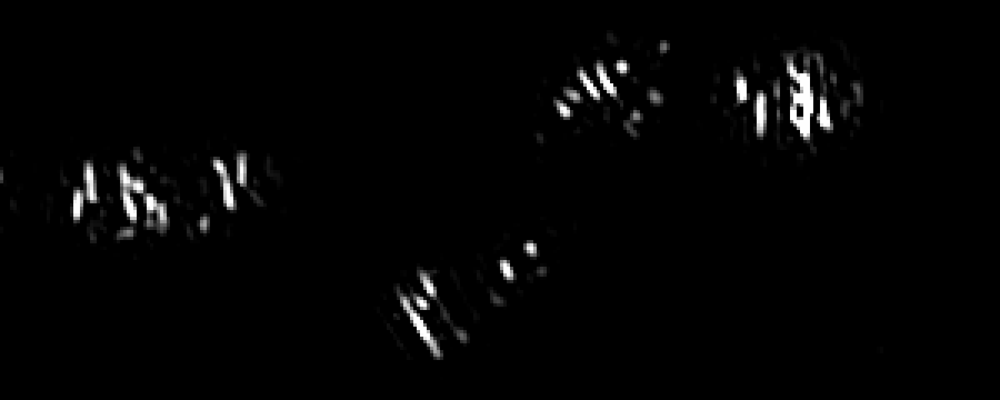
MreB TrackMate Time-lapse
Live-cell movie used in the Research in Motion section.
Back to research highlightsImaging Source Library
This page documents the internal media assets shown on the Bernhardt Lab site, with links to open-access publications where relevant.

Live-cell movie used in the Research in Motion section.
Back to research highlights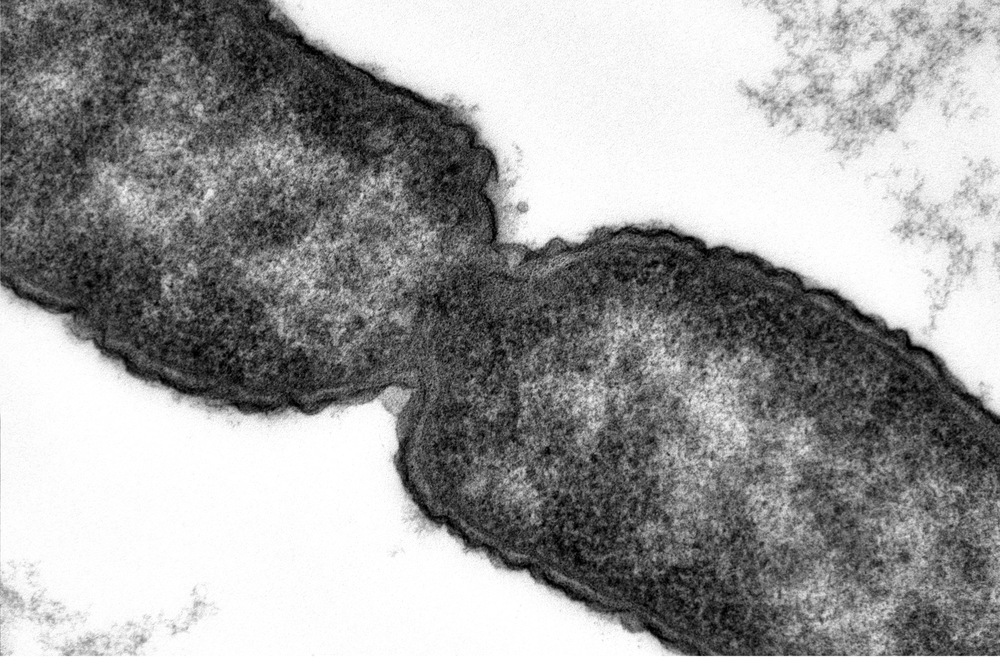
Transmission electron microscopy image of envelope architecture.
Back to research highlights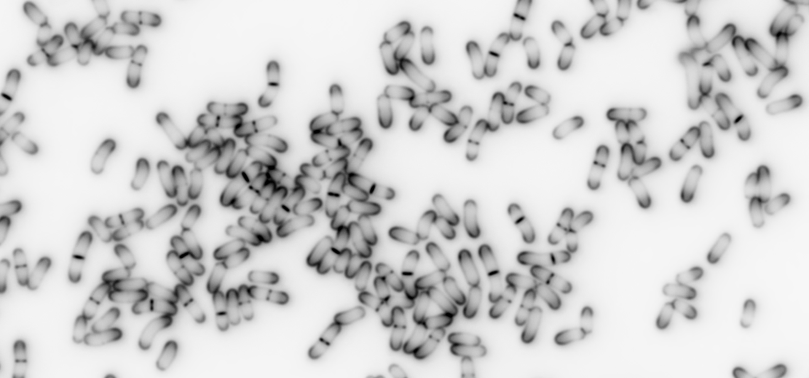
Fluorescence pulse-labeling image used to visualize envelope growth patterns.
Back to research highlights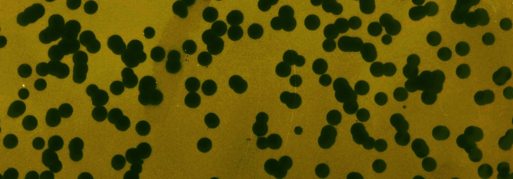
Image used in studies of Corynebacterium envelope biology and phage interactions.
Back to research highlightsComparative morphology panel used to illustrate species-diverse model systems.
Back to research highlights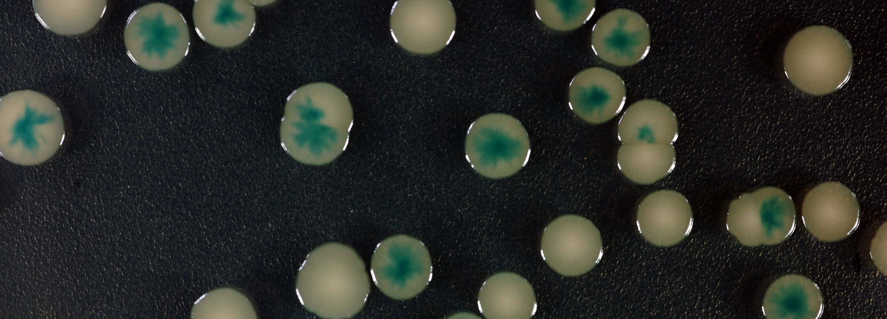
Colony imaging from a plasmid-loss screen associated with envelope phenotypes.
Back to research highlights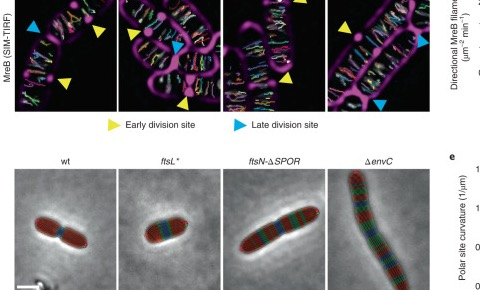
Microscopy panels from Nature Microbiology 2022 showing envelope dynamics in division mutants.
Open article on PubMed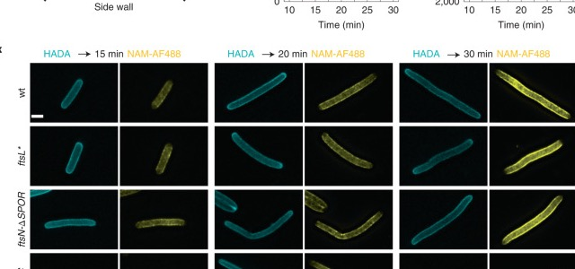
Representative frames linked to the supplementary movie set in Nature Microbiology 2022.
Open article on PubMed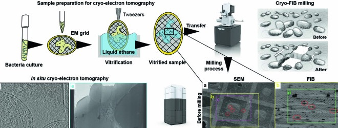
Cryo-electron tomography workflow and representative lamella imagery from open-access publication data.
Open article on PubMed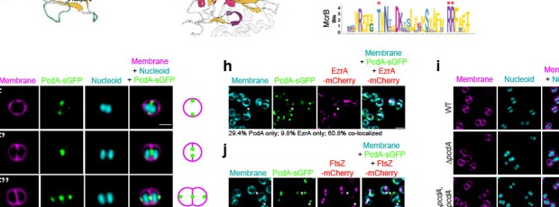
Microscopy panels from mBio 2023 tracking PcdA organization across division states.
Open article on PubMed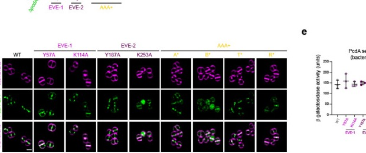
Microscopy-rich mapping panel from mBio 2023 linking localization to septation geometry.
Open article on PubMed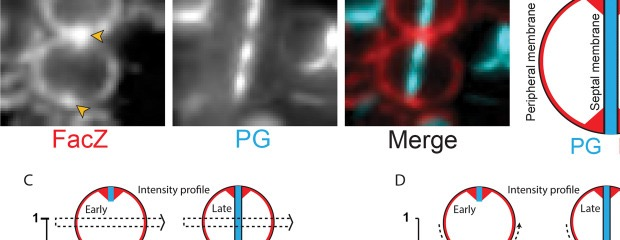
Fluorescence microscopy panel from mBio 2023 highlighting septal and peripheral patterning in S. aureus.
Open article on PubMedPublication imagery on this page links to PubMed records. Additional in-lab visuals are served from this website's local asset library.